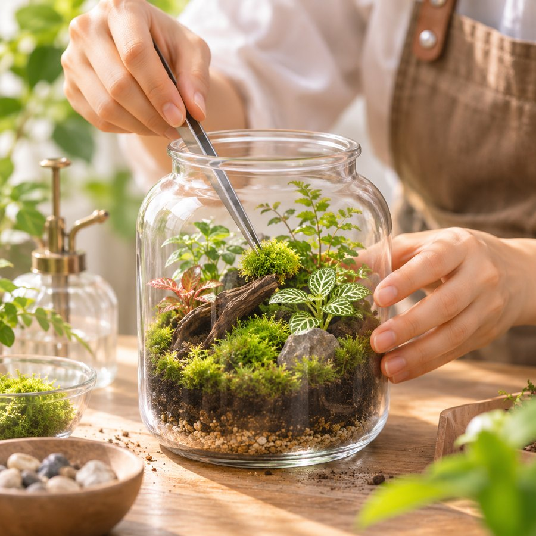

더고구마는 서울시립대학교 환경원예학과의 연구성과와 학교기업의 실제 사업을 교육의 장으로 활용합니다.
학생에게는 전공지식을 현장에서 체험할 기회를, 지역사회에는 식물과 농업을 가까이 경험할 기회를 제공합니다. 이를 위해 현장실습, 창업교육 및 창업실습 프로그램 등을 매년 운영하고 있습니다.
운영 프로그램
매년 학생과 지역 주민을 대상으로 운영합니다.

PRACTICE
조직배양 실습
조직배양묘 생산과 학교기업 업무를 직접 실습합니다.
START-UP
창업교육 및 창업실습
창업 전반에 대한 이해와 문제해결 능력을 기릅니다.

COMMUNITY
지역연계 프로그램
지역과 연계하여 융합형 교육 경험 기회를 제공합니다.